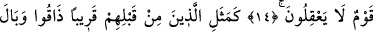

MÜNÂFIKLARIN DURUMU
TIPKI ŞEYTANIN DURUMU
GİBİDİR
11. Münâfıkların, kitap ehlinden inkâr eden dostlarına: Eğer siz yurdunuzdan
çıkarılırsanız, mutlaka biz de sizinle beraber çıkarız; sizin aleyhinizde kimseye asla
uymayız. Eğer savaşa tutuşursanız, mutlaka yardım ederiz, dediklerini görmedin
mi? Allah, onların yalancı olduklarına şâhidlik eder.
12. Andolsun, eğer onlar çıkarılsalar, onlarla beraber çıkmazlar; savaşa tutuşmuş
olsalar, onlara yardım etmezler; yardım etseler bile arkalarını dönüp kaçarlar,
sonra kendilerine de yardım edilmez.
13. Onların içlerinde size karşı duydukları korku, Allah’a olan korkularından
daha şiddetlidir. Böyledir, çünkü onlar anlamayan bir topluluktur.
14. Onlar müstahkem şehirlerde veya siperler arkasında bulunmaksızın sizinle
toplu halde savaşamazlar. Kendi aralarındaki savaşları ise çetindir. Sen onları derli
toplu sanırsın, halbuki kalpleri darmadağınıktır. Böyledir, çünkü onlar aklını
kullanmayan bir topluluktur.